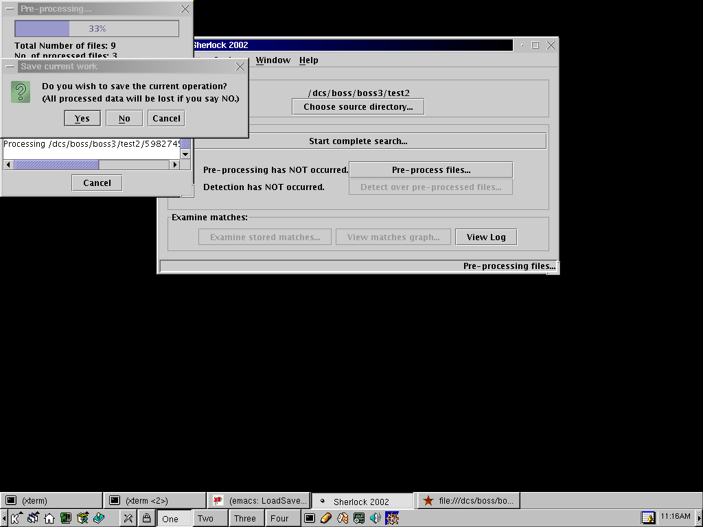

Save Session
NOTE: Loading and saving marking is not yet supported in the natural
language detection modes.
During the pre-processing & detection phase, you can stop the processes and
save them so that you can continue processing later.
- Click "Cancel" in the processing dialog
- Choose either to save this session or discard it
- If you'd like to save it, choose a file to save it in and then confirm.
- If you'd like to discard this session, everything produced in the operation will be deleted.
Save Session
